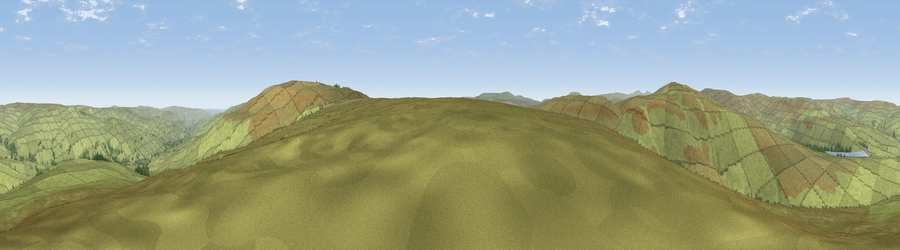

Noon Hill
#15691 in England · top 44% of its area beats it · near IreshopeburnThe view, rendered

A 360° render of this exact spot computed from the terrain model, tree cover and land cover — summer colours, afternoon light, calibrated against photographs of famous viewpoints. Real trees, hedges and buildings will differ in detail.
The panorama
Grey silhouette: terrain skyline in each direction (720 bearings, Earth curvature and refraction included). Dashed green: skyline with trees (+15 m) and buildings (+8 m) as obstacles. Blue strip: how far the ground is visible on each bearing.
Where the view opens
Wedge length = distance to the farthest visible ground on that bearing (vegetation-aware). Rings at 10, 25 and 50 km.
What fills the view
98% grassland · 1% woodland
Angular shares of the visible panorama (visual magnitude), not map area. Landscape diversity 0.04 (0–1 Shannon).
Key numbers
More beautiful places nearby
The staircase of upgrades: each row has a higher view potential than everything closer. Driving times are estimates from straight-line distance, calibrated against real road routing — check an actual route before setting out.
| Place | Direction | Drive | Score |
|---|---|---|---|
| Viewpoint near St. John's Chapel | ESE · 3 km | ~6 min | 64.3 |
| Chapelfell Top | ESE · 3 km | ~7 min | 66.2 |
| Viewpoint near Wearhead | W · 3 km | ~7 min | 66.5 |
| Fendrith Hill | SE · 4 km | ~8 min | 70.0 |
| Dead Stones | WNW · 7 km | ~15 min | 72.8 |
| Viewpoint near Allenheads | NNW · 9 km | ~18 min | 74.6 |
| Mickle Fell | SSW · 12 km | ~23 min | 75.8 |
| Great Dun Fell | WSW · 15 km | ~27 min | 77.8 |
54.71856, -2.22856 · source: osm peak · position refined by local search. Computed location — check access rights before visiting.